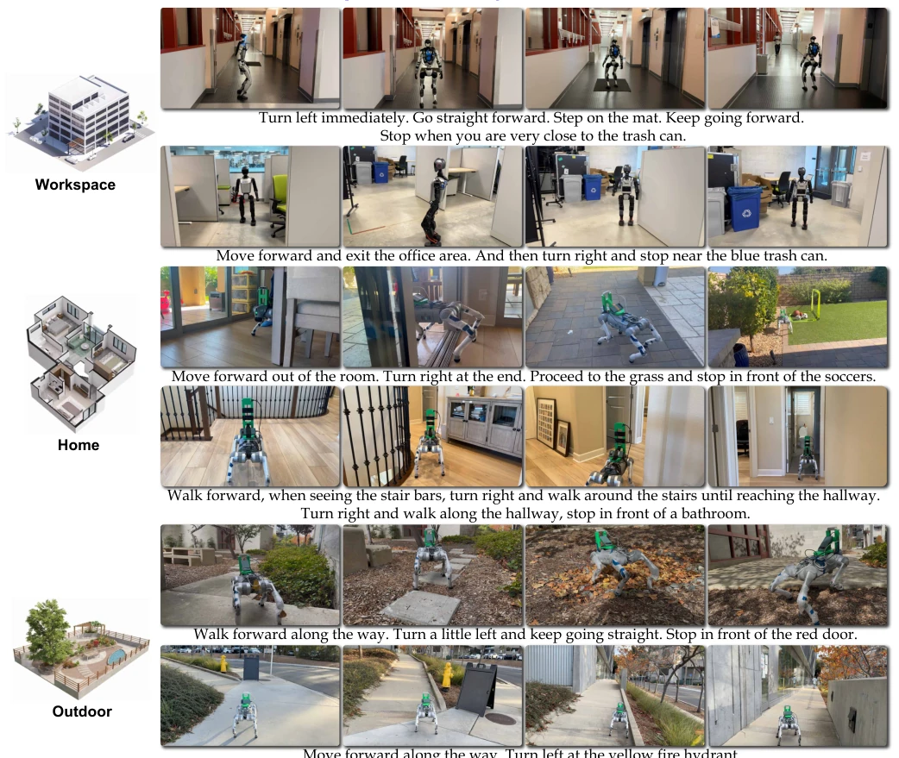
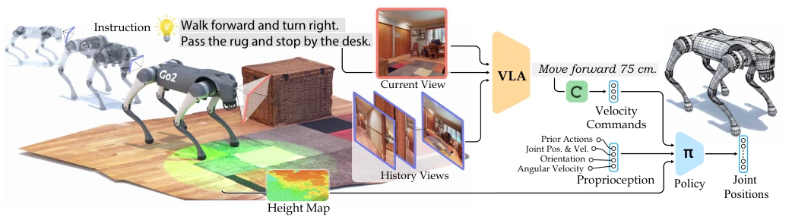
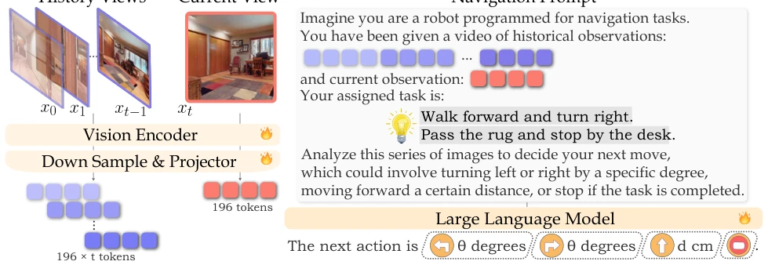
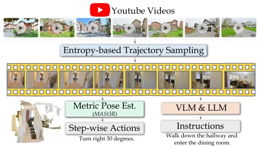
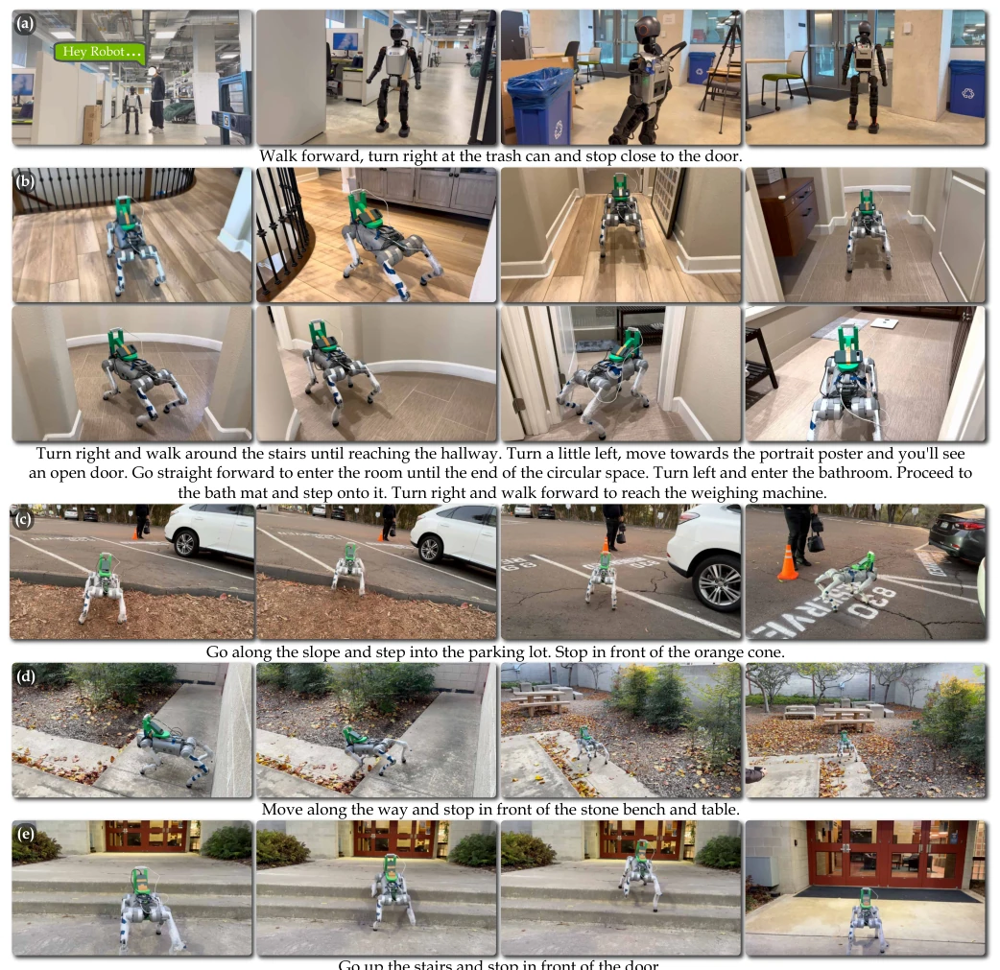
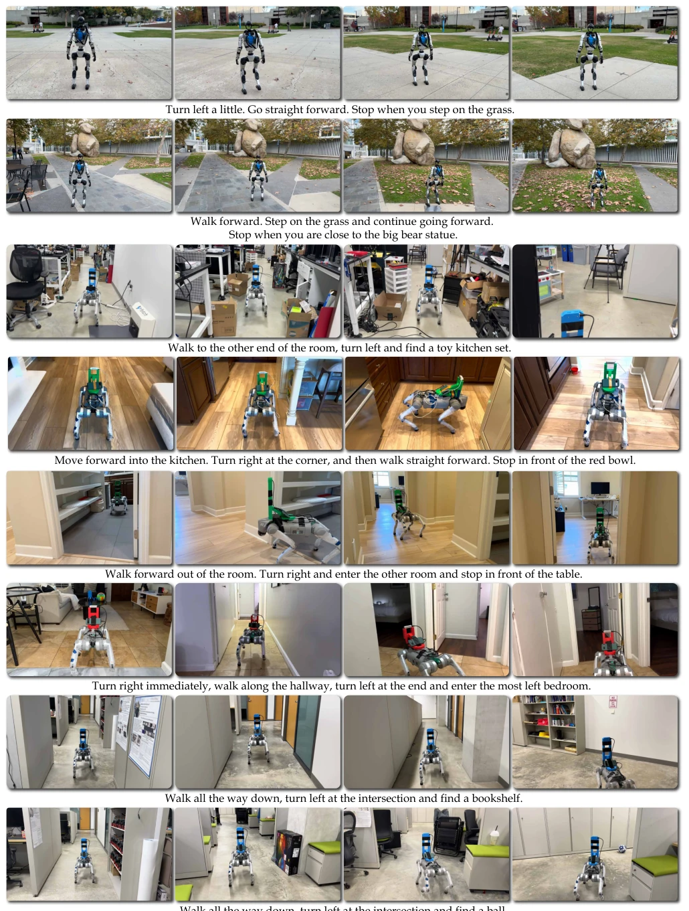
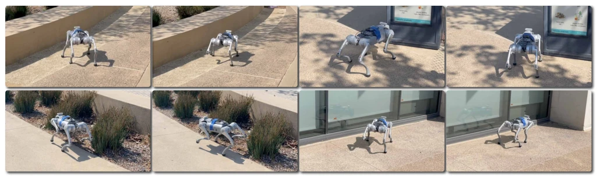
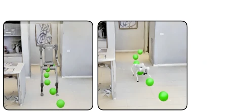
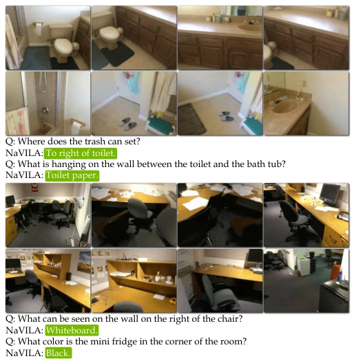

NaVILA's 'divide and conquer' strategy is indeed clever, decoupling VLM reasoning from RL execution, thereby avoiding the 'out-of-scope' task of asking large models to directly guess joint angles. However, while relying on LiDAR and single-stage RL training ensures robustness, the computational overhead and hardware requirements are substantial, posing a burden for resource-constrained edge devices. Converting YouTube human videos into navigation data is a highlight, though data cleaning likely involves numerous pitfalls, and the model's dependency on lighting conditions and transparent objects still requires verification. Overall, this represents a powerful attempt to bring VLN from 'simulation games' back to the 'real world.' Although not yet perfect, it is far superior to simulation agents that merely 'teleport,' deserving a high score, but one should not expect it to be deployed on mobile devices immediately.
Embodied Navigation (VLN) has long been the holy grail of the robotics field, yet existing work concentrates primarily on wheeled or discrete simulation environments [1]. For legged robots, directly having a VLM output low-level joint actions (VLA) is not feasible, as LLMs are inherently language models lacking prior understanding of physical motion [7]. Existing continuous navigation methods, such as NaVid [12], while improving performance, often rely on simulator pre-trained waypoint predictors and tend to fail when generalizing to real-world complex terrains. Furthermore, traditional methods overlook the robustness of low-level motion control, resulting in frequent failures in real-world scenarios involving obstacles or lighting variations. Consequently, a new framework is required that decouples high-level semantic reasoning from low-level motion execution while accounting for real physical interactions.

Fig. 1: Real-world demonstration of NaVILA: Upon receiving human instructions, NaVILA uses a vision-language model to process RGB video frames and employs locomotion skills to execute the task on a robot. The robot successfully handles long-horizon navigation tasks and operates safely in challenging environments.
NaVILA employs a two-level framework. The upper-level VLA is fine-tuned based on the VILA model, taking historical views and current observations as input to output mid-level actions in natural language (e.g., 'move forward 75cm'), rather than directly controlling joints. Regarding data, it integrates YouTube human navigation videos, simulation navigation data, and VQA datasets, generating instruction-trajectory pairs via entropy sampling and pose estimation. The lower-level motion policy utilizes single-stage PPO reinforcement learning, employing LiDAR point clouds to construct height maps as observations and converting VLA speed commands into joint position control. This design retains VLM reasoning capabilities while ensuring motion safety through a dedicated RL policy, achieving a reliable mapping from language to physical actions. The prompt design distinguishes between historical memory and current observations, enhancing spatiotemporal reasoning.

Fig. 2: NaVILA is a two-level framework combining high-level visual language understanding with low-level locomotion control. Our VLA model processes single-view images to produce mid-level actions in natural language, which are then converted into precise joint movements by an advanced low-level locomotion policy. This integration allows for strong generalization and adaptability across different real-world environments, and can operate the robot in real-time.

Fig. 3: Overview of our VLA framework. We denote the purple blocks ( ) as memory tokens sampled from historical frames, and the red blocks ( ) as the current observation tokens. 🔥denotes trainable parameters. In our experiments, we tested configurations with 8 to 64 frames for t.

Fig. 4: Data pipeline for transforming human touring videos in the wild into pairwise navigation data within a continuous environment. We begin by processing the videos into meaningful trajectories through entropy-based sampling [26]. Then we extract step-wise actions through metric camera pose estimation [27], and utilize VLM [13] and LLM [28] to generate instructions.
On the VLN-CE benchmark (R2R, RxR), NaVILA achieved a success rate improvement of over 17% compared to SOTA methods, with SPL metrics also significantly optimized. The newly proposed VLN-CE-Isaac benchmark fills the gap in legged robot navigation evaluation, demonstrating that visual strategies improve success rates by 14%-21% over proprioception-only strategies. In real-world tests, an 88% success rate was achieved on Unitree Go2 and H1, outperforming GPT-4o under complex instructions. Ablation experiments demonstrate that incorporating human video data significantly enhances generalization capabilities in outdoor scenarios. Although computationally intensive, the overall architecture exhibits good transferability across different robot platforms, validating the framework's generality.

Fig. 7: Qualitative results from the real-world deployment of NaVILA. (a) We integrate speech recognition [70] into NaVILA, allowing a human to control the robot using voice commands that begin with "Hey Robot!". (b) The robot successfully handles long-horizon navigation tasks. Given a lengthy instruction, it moves through different areas of the house and stops at the specified goal. (c), (d), and (e) The robot demonstrates its ability to navigate through obstacles, traverse challenging terrains, and climb up and down stairs.

Fig. 9: We show more results in diverse environments, such as urban streets, campus sidewalks, courtyards, and different houses. These settings add significant variety and challenges, including challenging terrains, dynamic objects, and different lighting conditions. The results NaVILA achieved represent a significant milestone, showcasing capabilities that have never been demonstrated before.

Fig. 12: Obstacle avoidance screenshots. Locomotion policy can ensure collision-free in the face of high grass, certain transparent glass, and large objects under strong sunlight. The policy presents robustness on sand and grass terrains.
其他图片Other Figures

Fig. 6: VLN-CE-Isaac Benchmark visualization.

Fig. 10: Spatial scene understanding results on ScanQA benchmark.